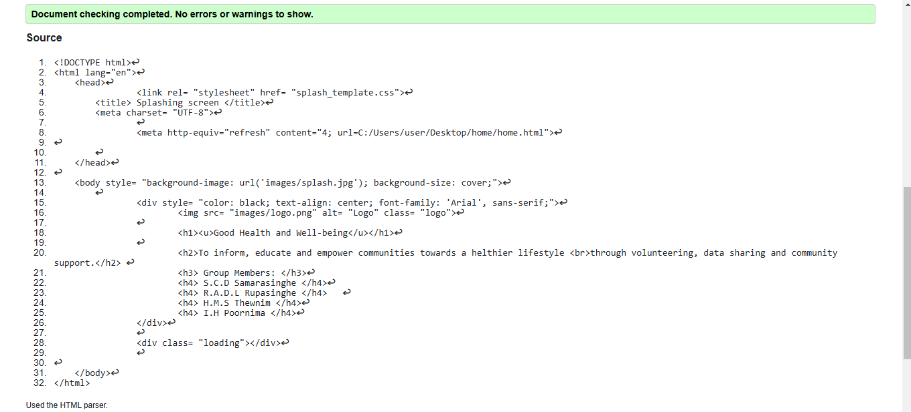
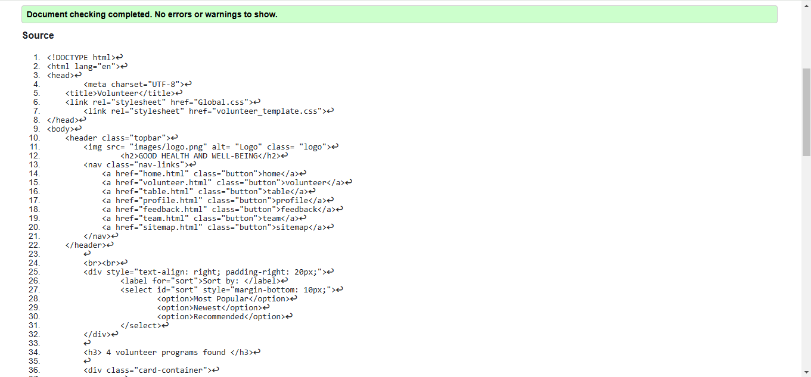
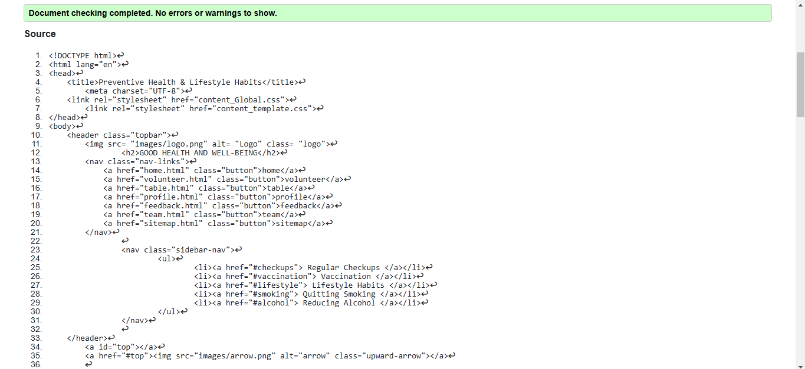

Splash Page validation report
After passing the splash screen and related pages through the W3C validator, a number of issues were discovered and corrected. One of the essential changes involved changing a file path to a relative URL within the refresh tag. Inline styles were moved to a CSS file for better organization, and all of the HTML tags were properly structured.

Back to Page Editor page
Volunteer Page validation report
The volunteer page was validated with the W3C HTML validator. The HTML markup followed proper HTML5 practices, and the majority of the elements validated without issues. There were some minor modifications to improve accessibility, such as ensuring that each image tag included an alt attribute and that forms were properly labeled. External CSS files were used appropriately to achieve the separation of style and content.

Back to Page Editor page
Content Page validation report
The content page was processed through the W3C HTML validator. The majority of the elements validated properly. Minor issues such as unclosed tags and mismatched paragraph formatting were fixed. All the images were given proper alt attributes for accessibility.
